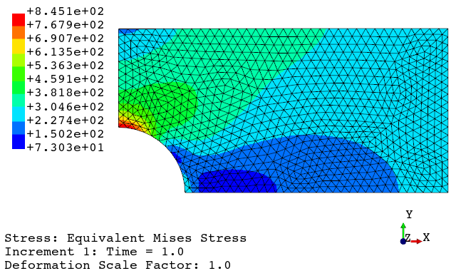

FEAPACK Examples
Advanced example #1: Creating a mesh with Gmsh and importing it into FEAPACK.
In this example, we will consider the problem shown in the basic example #2. However, this time we will be using Gmsh to generate the finite element mesh.
The FEAPACK files for this example can be found here.
Note 1: this example requires Gmsh for Python, which is not bundled with FEAPACK. To install Gmsh run: pip install gmsh.
Note 2: this example is not a Gmsh tutorial. In fact, the use of Gmsh will be kept to a minimum. Gmsh is capable of much more. Learn more about it here.
Solution via Gmsh and FEAPACK:
Start by creating a job script named advanced1.py and import the following modules:
import gmsh
import feapack.gmsh
import feapack.model
import feapack.solver
We then use Gmsh to define the geometry and to generate a very basic finite element mesh:
#-----------------------------------------------------------
# CREATING THE MESH WITH GMSH
#-----------------------------------------------------------
# initialize Gmsh
gmsh.initialize()
# points
p1 = gmsh.model.geo.addPoint( 0.0, 0.0, 0.0)
p2 = gmsh.model.geo.addPoint( 20.0, 0.0, 0.0)
p3 = gmsh.model.geo.addPoint( 0.0, 20.0, 0.0)
p4 = gmsh.model.geo.addPoint( 0.0, 50.0, 0.0)
p5 = gmsh.model.geo.addPoint(100.0, 50.0, 0.0)
p6 = gmsh.model.geo.addPoint(100.0, 0.0, 0.0)
# curves
c1 = gmsh.model.geo.addCircleArc(p2, p1, p3)
c2 = gmsh.model.geo.addLine(p3, p4)
c3 = gmsh.model.geo.addLine(p4, p5)
c4 = gmsh.model.geo.addLine(p5, p6)
c5 = gmsh.model.geo.addLine(p6, p2)
# surfaces
l1 = gmsh.model.geo.addCurveLoop([c1, c2, c3, c4, c5])
s1 = gmsh.model.geo.addPlaneSurface([l1])
# geometry done
gmsh.model.geo.synchronize()
# create Gmsh physical groups that will become FEAPACK sets
# by default, Gmsh only saves elements associated with a physical group
# hence, a physical group specifying the domain is generally required
gmsh.model.addPhysicalGroup(2, [s1], name='PG-DOMAIN') # contains the whole domain (a 2D surface)
gmsh.model.addPhysicalGroup(1, [c2], name='PG-X-SYM') # contains the edge for the x-symmetry boundary condition (a 1D curve)
gmsh.model.addPhysicalGroup(1, [c5], name='PG-Y-SYM') # contains the edge for the y-symmetry boundary condition (a 1D curve)
gmsh.model.addPhysicalGroup(1, [c4], name='PG-LOAD') # contains the edge for the load application (a 1D curve)
# generate 2D mesh
refinementLevel = 2
gmsh.model.mesh.generate(2)
for _ in range(refinementLevel):
gmsh.model.mesh.refine()
# if you want to view the mesh now, uncomment the following line
# gmsh.fltk.run()
# write mesh to file
gmsh.option.setNumber('Mesh.SaveAll', False) # default (also works with True, but more unused elements are saved)
gmsh.option.setNumber('Mesh.SaveGroupsOfNodes', True) # to save node sets
gmsh.write('advanced1.inp')
# finalize Gmsh
gmsh.finalize()
The following mesh is generated and stored into advanced1.inp:
We then use FEAPACK, as shown below, to create the model database (MDB) for the finite element analysis.
Because the Abaqus mesh input file was generated via Gmsh, the feapack.gmsh.clean('advanced1.inp') command shown below is required. This is because Gmsh stores lower dimension elements associated with physical groups. In this example, line elements are generated for the physical groups 'PG-X-SYM', 'PG-Y-SYM', and 'PG-LOAD'. FEAPACK does not require these elements, but they upset the element numbering. Additionally, when the Gmsh option gmsh.option.setNumber('Mesh.SaveAll', True) is used, Gmsh may also save unconnected nodes, such as the center of the arc shown above, which will upset the node numbering. To fix these issues, the FEAPACK feapack.gmsh.clean function is used, which removes unused elements and nodes, while also fixing the element and node numberings (indices).
#-----------------------------------------------------------
# FINITE ELEMENT ANALYSIS WITH FEAPACK
#-----------------------------------------------------------
# create model database (MDB)
feapack.gmsh.clean('advanced1.inp') # required if inp file is generated by Gmsh
mdb = feapack.model.MDB.fromFile('advanced1.inp')
# print available sets
print('Node sets:', *mdb.nodeSets.keys()) # Node sets: PG-X-SYM PG-Y-SYM PG-LOAD PG-DOMAIN
print('Element sets:', *mdb.elementSets.keys()) # Element sets: PG-DOMAIN
# create surface set
mdb.surfaceSet(name='LOAD-SURFACE', surfaceNodes='PG-LOAD')
# create material and section
mdb.material(name='AL', young=70000.0, poisson=0.3)
mdb.section(
name='AL-SECTION',
region='PG-DOMAIN',
material='AL',
type=feapack.model.SectionTypes.PlaneStress, # or simply 'PlaneStress'
thickness=10.0,
reducedIntegration=False
)
# create load
mdb.surfaceTraction(name='TENSION', region='LOAD-SURFACE', x=250.0)
# boundary conditions
mdb.boundaryCondition(name='X-SYM', region='PG-X-SYM', u=0.0)
mdb.boundaryCondition(name='Y-SYM', region='PG-Y-SYM', v=0.0)
# call solver
feapack.solver.solve(mdb, analysis='static')
To generate the mesh and perform the finite element analysis, the following command is used: python advanced1.py. The files advanced1.inp (mesh) and advanced1.out (results) will be generated upon a successful run. Then, the viewer application can be launched using the following command: python -m feapack.viewer.
Results:
